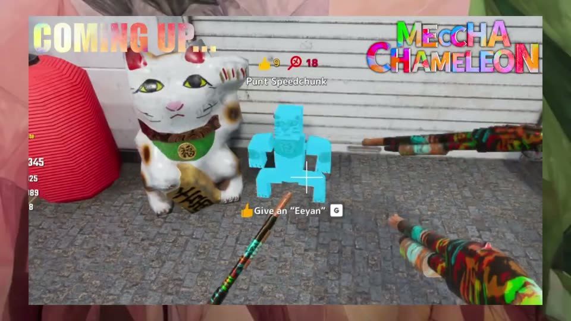
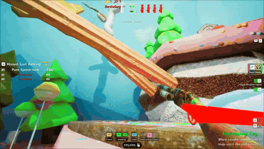

MECCHA CHAMELEON review: hide-and-seek where you paint yourself to match the map

MECCHA CHAMELEON starts me as a blocky white body that has to paint itself to blend in with the map. lemorion_1224 released the online PvP game on Steam in June 2026, recommended for 2 to 10 players, friends or strangers. The Seekers win if they find everyone within the time limit. I played with a group of friends, no mods.
On the Osaka map a friend was painted as a small lucky cat, and in the mansion a friend hid with green floral wallpaper painted on. In the sewer, a friend was painted with wood grain on a broken pallet, and I asked, "How the hell did you get all that wood texture on there?" They said they painted it on one pixel at a time.


My own hide in Osaka was a yellow street sign: I flattened myself against it and painted myself yellow with black strokes, and I still got found. In the mansion I wedged myself upside down into a ceiling corner, and a red warning said my body was buried too much and my location would be revealed if I kept it up. When I was seeking, the paint menu had a glow slider. My co-seeker was black with glowing white spots, and I went white with black spots, like a Dalmatian.


The last round was on Sugar Land. One friend hid as a marshmallow on the frosting and got shot near the end. Another lay flat on top of a wooden churro arch, and we never found them. Afterward they told me I had run right through them.

The answer check after a round shows where the hiders were, and my favorite was the lucky cat: I said it was the best one I had. The red warning for burying your body too much is a game rule, and it caught my ceiling corner. We only played official maps here, and I would like to try a custom map modpack with friends. The game supports Steam Workshop.
More party games with friends: How to Fish, where we caught a whole cow, CRACK and Lethal Company as ducks.